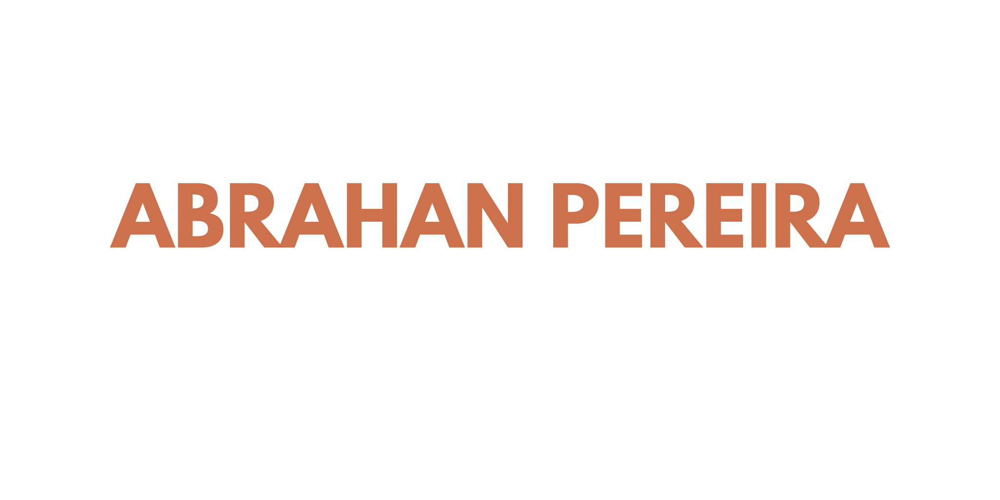

 Abrahan Pereira
Hola, Soy Abrahan Pereira — Soy un desarrollador front-end en formación, apasionado por transformar ideas en experiencias digitales intuitivas, atractivas y centradas en las personas. Mi trayectoria combina ingeniería de software, diseño multimedia, marketing digital y creatividad visual, lo que me permite construir interfaces modernas que unen funcionalidad y narrativa. Con una base sólida en programación y un enfoque en usabilidad, busco aportar soluciones que conecten con los usuarios y reflejen autenticidad. Además de mi trabajo técnico, disfruto explorar tendencias emergentes, perfeccionar mis habilidades en diseño y compartir conocimiento para inspirar a otros en su camino profesional.
Acerca de mí

En la intersección entre creatividad y funcionalidad, desarrollo interfaces que no solo se ven bien, sino que también ofrecen experiencias claras y útiles. Mi trabajo combina investigación cuidadosa, sistemas de diseño intuitivos y una narrativa visual sólida para dar vida a soluciones digitales que resuelven problemas reales.
Durante los últimos años he trabajado en proyectos que van desde pequeños emprendimientos hasta equipos en crecimiento, creando interfaces flexibles, dando forma a identidades digitales memorables y desarrollando productos web fluidos. Mi enfoque se basa en la empatía, la claridad y el propósito, siempre colocando al usuario en el centro de cada experiencia. Fuera del código, me encontrarás explorando nuevas ideas, investigando tendencias emergentes en desarrollo y diseño, o compartiendo conocimientos con quienes están iniciando en el mundo tecnológico.
Ya sea perfeccionando una interfaz o creando una identidad digital desde cero, disfruto transformar ideas en experiencias cohesivas y atractivas. Me enfoco en conectar diseño y desarrollo, asegurándome de que cada detalle —desde la tipografía hasta la interacción— tenga un propósito claro e intencional. Construyamos juntos algo significativo.
Experiencia
Junior Front-end developer
ABPEREIRA Company
2023 — 2024
Diseñé e implementé soluciones digitales que optimizaron procesos internos y mejoraron la experiencia del cliente. Lideré proyectos de rediseño web y fortaleciendo la presencia digital de la empresa.
- Diseñador de Marketing Digital
ABPEREIRA Company
2023 — 2024
Combiné habilidades técnicas y creativas para desarrollar estrategias de marketing digital. Creé piezas visuales y campañas que aumentaron la visibilidad de la marca, integrando herramientas como Canva y conocimientos en mercadeo digital.
Proyectos Académicos y Freelance
CCSA , INSAFORD ,KODIGO
2019 — 2025
• Desarrollo de interfaces web con HTML, CSS y JavaScript.
• Creación de prototipos interactivos y maquetas visuales en proyectos de diseño multimedia.
• Implementación de prácticas de redes informáticas y modelado 3D para aplicaciones educativas y creativas.
Educación
Técnico en Ingeniería de Software
Universidad Tecnológica de El Salvador
2022 — 2025
Base sólida en desarrollo web, estructuras de datos y lógica de programación
Bachillerato General con Diplomado en Desarrollo de Apps – Especialización en Diseño Multimedia
Colegio Joyas de Cerén
2019 — 2020
Enfoque en diseño visual y herramientas multimedia aplicadas al desarrollo de aplicaciones
Certificado en Inglés Básico – Certificado en Inglés Intermedio
nsaforp / Programa de Formación Profesional Conjunta
2020 — 2021
Desarrollo de habilidades comunicativas en contextos más complejos
Reconocimiento en Marketing Digital – Mercadeo en Medios Digitales
- Embajada de EE. UU. en El Salvador / Centro Cultural Salvadoreño Americano
2025
Destacado por desempeño y entusiasmo en proyectos académicos y profesionales.
Certificado en Diseño 3D
Insaforp
/2022
Modelado tridimensional y visualización digital.
Que es lo hago
Desarrollo Web Front-end
Construcción de interfaces modernas y funcionales con HTML, CSS y Fundamentos de JavaScript, aplicando buenas prácticas de accesibilidad y rendimiento.
Diseño y Desarrollo de Aplicaciones Web
Creación de prototipos y maquetas interactivas, desde wireframes hasta interfaces completas, integrando diseño multimedia y programación.
Dirección Creativa en Proyectos Digitales
Desarrollo de conceptos visuales y storytelling aplicado a campañas digitales, lanzamientos de productos y presencia online.
Diseño de Marketing Digital
Producción de materiales gráficos para redes sociales, anuncios digitales y presentaciones, apoyándome en herramientas Adobe y conocimientos en mercadeo digital.
Completados
Return Rate
Positivas
Satisfechos
Proyectos Destacados
Una selección de trabajos que reflejan mi enfoque en la claridad visual, el diseño web moderno y la comunicación digital efectiva. Cada proyecto combina programación front-end, identidad visual y creatividad aplicada, mostrando cómo transformo ideas en experiencias digitales simples, funcionales y atractivas.
 ABPEREIRA
ABPEREIRA
Desarrollo y mantenimiento del sitio web oficial de ABPEREIRA , Implementación de soluciones digitales orientadas a optimizar procesos internos y mejorar la experiencia de clientes y colaboradores.
- diseño de marketing
- diseño de branding
 Aurea House
Aurea House
Creación de un catálogo digital para una marca de electrodomésticos. Diseño responsivo y moderno, con énfasis en accesibilidad y experiencia de compra intuitiva.
- diseño de marketing
- diseño de branding
 Catalogo de Marketing Digital
Catalogo de Marketing Digital
Desarrollo de un catálogo visual para campañas de marketing digital, Aplicación de herramientas Adobe o Affinity y estrategias de comunicación para fortalecer la identidad de marca y presencia online.
- diseño de marketing
 PRISMA 3D
PRISMA 3D
Desarrollo de una plataforma interactiva que permite visualizar y presentar productos 3D
- identidad de marca
- diseño de marketing
 Proximamente
Proximamente
Nuevos proyectos en desarrollo que integran programación front-end, diseño multimedia y marketing digital, Enfoque en innovación, narrativa visual y experiencias digitales centradas en el usuario.
- diseño de branding
- diseño de producto
- diseño de marketing
- diseño de productos